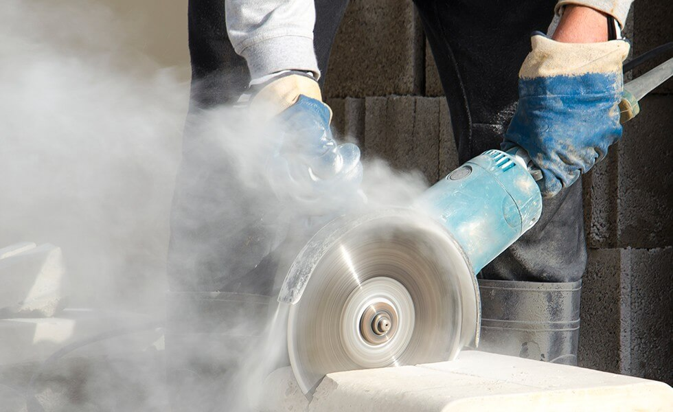
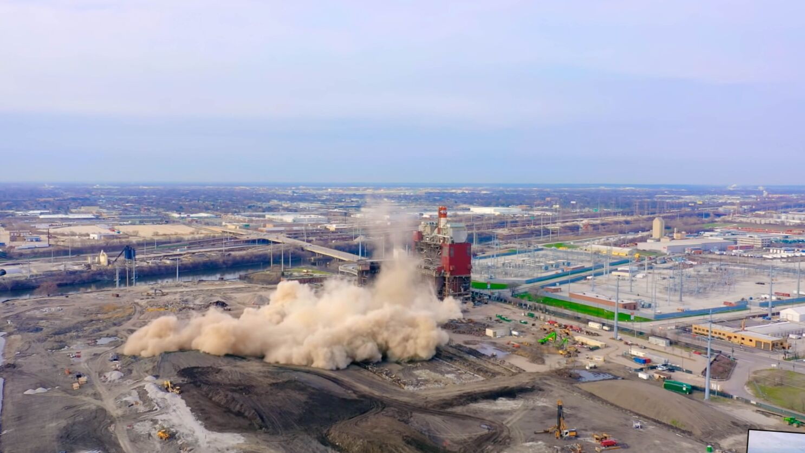

Dust Analyzer
Welcome to Agua Instruments' Dust Analyzer page. Our advanced Airborne Dust Monitoring solutions are designed to provide precise and Real-Time Dust Analysis for various industrial and environmental applications. With state-of-the-art technology, our analyzers ensure accurate Dust Concentration Measurement and Continuous Dust Monitoring to maintain safety and regulatory compliance. Trust Agua Instruments for reliable Industrial Dust Monitoring and Environmental Dust Analysis.
Why Choose Agua Instruments for Dust Analyzers?
Cutting-Edge Technology
Our Dust Analyzers use the latest Air Quality Dust Sensors for precise measurements.
Reliable Solutions
We offer dependable Dust Level Detection Systems that ensure continuous and accurate monitoring.
Customizable Systems
Tailored solutions to meet specific industrial and environmental monitoring needs.
Comprehensive Support
From installation to maintenance, we provide full support to ensure the effective operation of your dust monitoring systems.
Cost-Effective
Our solutions are competitively priced, ensuring you get the best value without compromising on quality.

Monitor dust levels in manufacturing plants, mines, and construction sites to ensure worker safety and regulatory compliance.
Assess the impact of dust on air quality in urban and rural areas.

Control dust emissions from combustion processes to meet environmental standards.
Monitor and control dust during cement production to ensure a safe working environment.
Measure and control dust levels in farming operations to protect workers and livestock.